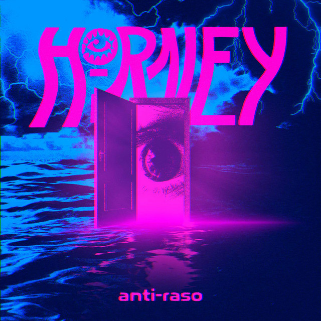
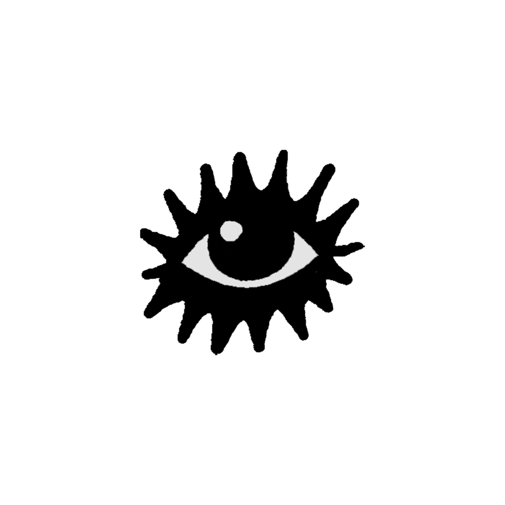

HRNEY
SAI DE CASA E COLE NOS SHOWS!!!

- Mood:
- ANTI-RASO 😈⚡️
- Status:
- SAI DE CASA E COLE NOS SHOWS!!! (sorte do dia, direto do ◎)

este perfil não toca sozinho. de nada. 💿
HORNEY's Albums
Nada de carrinho, nada de checkout. Quer garantir? Manda DM e a gente te avisa primeiro.
-
Camiseta ANTI-RASO
porta no mar, olho gigante, raio. preta.
EM BREVE me avisa (DM) ↗ -
Moletom OFF!
pra Joinville no inverno. e no verão também.
EM BREVE me avisa (DM) ↗ -

Ecobag ◎
o olho do O. cabe 4 EPs e um coração partido.
EM BREVE me avisa (DM) ↗ -
Kit de bottons
pra mochila, pra jaqueta, pro seu Top 8 da vida real.
EM BREVE me avisa (DM) ↗
aquele questionário de corrente de 2005. respondido pela banda, só com fato. repassa!!!
- nome
- HORNEY (o O é um olho. sim, ele tá te olhando)
- de onde
- Joinville (SC), Brasil
- formação
- quarteto — Duda (Eduarda) Maiolini, voz & letras · Rafa Bello, composição · + 2
- som
- punk, hardcore e grunge — com toques de MPB
- idioma
- português, desde 2026
- primeiro EP
- Four Rooms for Four Fools (2022)
- último lançamento
- ANTI-RASO — EP, 30/07/2026, 4 faixas
- faixa mais curta
- ROMÂNTICA, 2:28
- faixa mais longa
- QUEBRA-CABEÇA (feat. Dani Buarque), 4:20
- o EP inteiro dura
- 13:53
- nota da Unglued
- 7.8/10
- primeiro clipe
- Fool's Game (2022), dir. Rique Duarte
- último show
- 09/10/2026 — ÚLTIMO SHOW DO ANO
- próximo show
- sem shows marcados — cola no Instagram pra saber primeiro
- seguidores no IG
- 7.3K
- ouvintes/mês
- 1.8K
- uma frase
- "ANTI-RASO significa mergulhar fundo nas coisas."
- quem quer conhecer
- Você. No próximo show. Na grade. Gritando o refrão de OFF!
- primeiro amigo
- o Olho ◎
- slogan
- SAI DE CASA E COLE NOS SHOWS!!!
HORNEY is in your extended network
About me:
Quarteto de alt/indie rock de Joinville (SC). Punk, hardcore e grunge no sangue, com toques de MPB — e cantando em português desde 2026. Voz e letras: Duda Maiolini. Composição com Rafa Bello. +2 que fazem o barulho todo acontecer.
“ANTI-RASO significa mergulhar fundo nas coisas. É se recusar a viver apenas na superfície.”
“A Horney não é uma banda que vai tocar só rock pesado, nem uma banda que vai tocar só música melancólica.”
Who I'd like to meet:
Você. No próximo show. Na grade. Gritando o refrão de OFF!
HORNEY's General Info
| Band Members | Duda (Eduarda) Maiolini — voz & letras Rafa Bello — composição +2 |
|---|---|
| Hometown | Joinville, SC, Brasil |
| Sounds Like | punk, hardcore e grunge — com toques de MPB. Em português desde 2026. |
| Latest Release | ANTI-RASO (EP, 30/07/2026) |
| Press | Unglued: 7.8/10 ↗ |
| First EP | Four Rooms for Four Fools (2022) |
quer HORNEY na tua cidade? chama no DM. · [Subscribe to this Blog]
HORNEYANTI-RASO — FORA AGORA30/07/2026
Novo EP, 4 faixas · 13:53: OFF!, QUEBRA-CABEÇA (feat. Dani Buarque), MERGULHAR e ROMÂNTICA.
“ANTI-RASO significa mergulhar fundo nas coisas. É se recusar a viver apenas na superfície.” — Duda
HORNEYUnglued: 7.8/10 pro ANTI-RASOfixado
A review de ANTI-RASO na Unglued: 7.8 de 10. A gente imprimiu e colou na geladeira (mentalmente).
HORNEYMERCH EM BREVEfixado
Nada de carrinho, nada de checkout. Quer garantir? Manda DM e a gente te avisa primeiro.
HORNEYMERGULHAR — single2026
single · 2026 · também está no EP ANTI-RASO.
HORNEYOFF! — single13/11/2025
single · lançado em 13 de novembro de 2025 · abre o EP ANTI-RASO.
HORNEYSAI DE CASA E COLE NOS SHOWS!!!fixado
Não viu sua cidade? Chama a gente — DM no Instagram. Datas novas saem primeiro lá.


Displaying 0 of 0 comments
os marcados com ✦ são fãs fictícios, amor 100% real. o teu vai pro mural compartilhado da HORNEY (fica neste navegador).